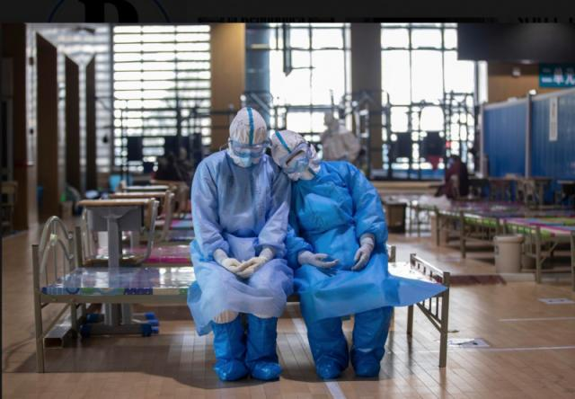
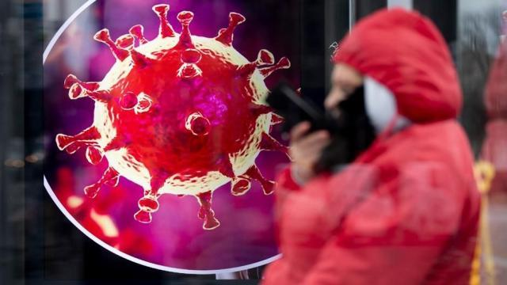

牛津流行病学家陈铮鸣：做最坏打算，英国防疫策略会成功吗？| 独家专访
原文链接 备份链接 作为一个科学大国，英国是如何应对新冠疫情的？他们是否能走出一条和中国不同、社会成本更低而行之有效的防疫之路？为此我们采访了流行病学专家、牛津大学终身教授陈铮鸣。 英国于 1 月底确诊第一位来自中国的输入性新冠患者。截 …
体坛周报全媒体特约记者 邢飞宇发自波鸿
在强有力的措施干预下，全中国上下举国同心，历经2个多月的时间，终于将新冠病毒疫情控制在了相对平稳的态势。然而就在国人可以稍微松了一口气的同时，新冠病毒却在亚欧大陆的另一端开始疯狂肆虐，意大利，德国，西班牙等国相继沦陷，确诊病例急速攀升，整个欧洲陷入血雨腥风。作为欧洲“战疫”过程的实地见证者，我将为大家描述自己在欧洲新冠疫情下的真实生活。
戴口罩反遭歧视
当国内疫情爆发，人人自危时，有一群人虽然没有身处疫区，但同样饱受新冠病毒带来的痛苦与困扰，这群人就是身处海外的中国同胞。他们因为国内疫情严重，不仅无法回国与家人团聚过年，甚至还要孤身在外，时而遭受外国人的歧视和侮辱。我身处北威州，德国疫情最为严重的地区，深切感受到了新冠病毒给我生活带来的变化。
2月初，正值国内疫情大面积爆发之时，而欧洲还相对算是净土，我与朋友相约到捷克和奥地利旅游。在去往捷克的航班上，只有我和朋友两个亚洲面孔，不知是有心还是无意，坐在我们前排的两个外国人在我们坐下后，跟空乘人员耳语几句，然后就坐到了更靠前的空座，随后我们两个中国人的前后左后一排就都变成了空座，在这架人不算少的飞机上被“冷处理隔离”，难免会令人多想。而且只要我稍微咳嗽一声，立马就会有几道严厉戒备的目光远远地打在我身上。到达布拉格机场以后，到处都写满了捷克语、英语、俄语、韩语等我看不懂的文字，在整个机场我只看到了三个熟悉的中文字眼，但也格外刺眼——消毒液。
2月中旬我报团前往荷兰、法国、比利时、卢森堡等地旅游，在荷兰时不慎受风感冒，出现了咳嗽、流鼻涕的症状，同车的中国人发现我的情况后，开始刻意地“回避”我，我察觉到了他们对我态度的变化，也能够理解他们的感受，毕竟在这个节骨眼上，中国人也必然会觉得自己的中国同胞是最危险的那个。我只能尽量克制自己不去咳嗽，尽可能地避免给同胞们制造“恐慌”。
很多人质疑，为什么在疫情如此严重的情况下，欧洲人还是坚持不戴口罩。除了《反蒙面法》以外，我个人认为更大的原因在于他们已经形成了一种固有的思维：戴口罩的人都是病人。我不止一次听过有人讲，有的中国女生因为脸部过敏戴了口罩，被不少德国人叫住“问候”的情况，更有甚者，因为戴口罩坐公交引发全车人不满，所有人纷纷下车表示反感和抗议。在欧洲疫情日益严重的过程中，很多中国人通过各种途径，甚至高价买到了口罩，却发现根本戴不出去，因为害怕遭到欧洲人的歧视，甚至是辱骂和殴打。

几万人看球如坟头蹦迪
3月3日晚，沙尔克04与拜仁慕尼黑的德国杯1/4决赛在傲赴沙尔克球场照常进行，我受朋友邀约前去观赛。然而当时意大利和德国疫情已经迅速蔓延，沙尔克主场所在的北威州也正是德国疫情的重灾区之一。经过长时间的思想斗争后，我决定还是做好必要防护后再去观赛，为此我还特意买了一个脖套，用它遮住脸上的口罩，免得一路上引起不必要的误会。
从家里前往傲赴沙尔克球场要坐一个多小时的车，车上的球迷越来越多，逐渐人满为患。然而我却始终没有看到除我之外的任何一个人有戴口罩，球迷熟人见面后依旧该握手握手，该亲吻亲吻，丝毫没有任何对当下疫情的回避和恐惧。反倒是蒙着面的我总会遭到一些人奇怪的注视，我只好缩在角落，假装因为冷所以会带上脖套。
终于抵达球场，然而我的“小伎俩”却被球场安保人员拆穿，他们拦下我询问我戴口罩的原因，我只得如实说道，我是因为害怕被传染，所以戴口罩做防护而已，并且反复解释道，我绝对没有携带病毒。就这样，他们终于同意放我入场，然而却禁止我继续带口罩，说是怕引起场内球迷的恐慌。事情已经这样了，也只能硬着头皮进去了。
我所在的拜仁客队球迷看台是一个不设座位的站台，狭小的区域里熙熙攘攘挤了上百号人，人挨着人，摩肩擦踵，连个转身的空间也没有，可想而知这在疫情之下是多么危险、恐怖的场面。而且在场有不少是从巴伐利亚州过来远征的拜仁死忠，要知道巴伐利亚州同样是疫情的重灾区。这样的一群人，在这样一个狭小空间内，人搂人蹦跳高唱两个小时，真的让人不禁有“坟头蹦迪”的感觉。
球赛结束后，我非常担心自己的健康状况，便开始主动居家隔离，关注自己每天的身体情况。在家呆了三四天左右，实在是没有余粮了，在感觉自己身体并无任何症状的情况下，我被迫前往最近的超市买东西。令人欣慰的是，超市里并没出现货架被扫购一空的状况，但会发现很多人已经开始囤货，特别是厕纸等生活必需品。在德国锡根的一家超市，甚至有顾客因为抢购厕纸与店员发生口角和争执。
从3月3日看完球赛到现在，十天多的时间里我只出过三次家门，而且活动范围仅限于家到超市的1公里范围，并且避免搭乘公共交通。在欧洲当前疫情局势下，在外面多活动一分钟可能就要承担一分被感染的风险。如今出门的时候，终于欣慰地发现当地人见面的社交礼仪已经改变为了碰肘和碰脚，避免握手和亲吻等暴露皮肤接触，然而想要让欧洲人学会集体戴上口罩，可能还是遥遥无期。

为身为中国人骄傲自豪
上周五德甲联赛正式宣布停摆，至此，五大联赛已经全部宣告暂停。此前，五大联赛球队寄希望于空场比赛，不让球迷入场观赛，能够尽量减少病毒聚集性传播，然而诸如巴黎圣日耳曼、门兴等死忠球迷依旧会在球场外聚集，屡劝无效，所以迫不得已，也只能采取停赛这种斩草除根的方式，以此断了球迷们的念头。
说欧洲防疫只能算个笑话，其实并不是一句玩笑。从英国寄望于让民众大面积感染从而获得群体性免疫的适者生存式疗法，到瑞典不检测，眼不见心不烦，自暴自弃式疗法，我们在嘲笑与唾骂的同时，看到的是无助与悲哀。德国总理默克尔为了把民众吓回家中，甚至说将有60%到70%，也就是4800万到5600万德国人会感染病毒。然而这些都是徒劳，一心只蹦黄泉迪的某些人，甚至在网络上公开发出邀请函，组织新冠病毒感染者派对，号召大家来共同感受病毒。除了“不见棺材不落泪”，笔者实在不愿评价更多的话了。
作为滞留在欧洲的中国人，我们从疫情的旁观者变成了亲历者，从为家人担心到为自己担心。越是这样的时刻，我们越为自己中国人的身份感到骄傲和自豪。面对新冠病毒这样一道“超纲题”，有的国家挣扎了一段时间，选择求助了；有的国家觉得太难，快要被逼疯了；有的国家不想答了，就直接把考卷撕了；而只有中国，能凭借自己的实力，踏踏实实地上交一份合格的答卷。没有生命，何谈生活？中国春天的脚步越来越近了，可世界的凛冬才刚刚到来。

原文链接 备份链接 作为一个科学大国，英国是如何应对新冠疫情的？他们是否能走出一条和中国不同、社会成本更低而行之有效的防疫之路？为此我们采访了流行病学专家、牛津大学终身教授陈铮鸣。 英国于 1 月底确诊第一位来自中国的输入性新冠患者。截 …
原文链接 备份链接 武汉已从阻击战转为反击战。欧洲疫情迅速蔓延，单日新增近千 2020年2月26日，在马来西亚雪邦，从武汉撤回的马籍民众抵达当地机场机场。图/ 法新 文 |《财经》数据研究员徐进 图 |《财经》视觉中心 编辑 | 郝洲 …
原文链接 备份链接 当人类生存的主题被病毒、大流行病裹挟时，在白宫坐镇的特朗普、民间看好的疾病专家安东尼·福西和美联储主席鲍威尔纷纷出招，是老旧的套路还是定海神针，还未可知 文 |《财经》特派记者 金焱 发自华盛顿 编辑 | 苏琦 3 …
原文链接 备份链接 应对重大公共卫生事件对美国大选影响举足轻重，福特总统在1976年连任失败被指一定程度上受到应对猪流感事件不利的影响，特朗普目前应对疫情的表现被美国媒体称为“灾难”，他能亡羊补牢，避免重蹈覆辙吗 文 |《财经》记者 王晓 …
原文链接 备份链接 体坛周报特约记者吴家驹华盛顿报道 2月3日，在通道找比尔为中国录祝福的自己，完全不会想到：37天后的NBA，会因为疫情而停摆。也想不到自己短暂的生涯，可能会以这种方式结束。 全球第一例感染者至今无从考证，进入2020年 …